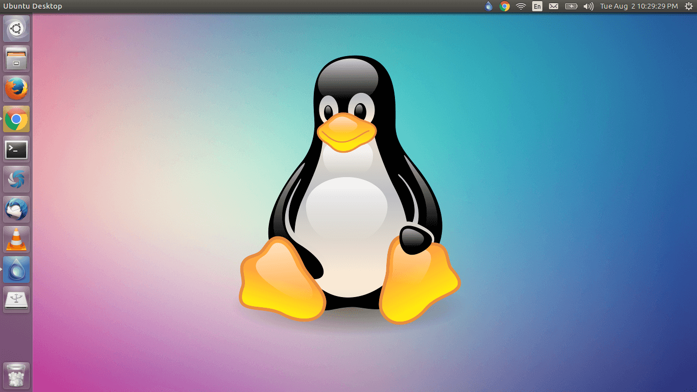

Products
-

Mac Book
The MacBook is a brand of Macintosh notebook computers designed and marketed by Apple Inc. that use Apple's macOS operating system since 2006.
-

Linux
Linux has long been the basis of commercial networking devices, but now it's a mainstay of enterprise infrastructure. Linux is a tried-and-true, open-source operating system released in 1991 for computers, but its use has expanded to underpin systems for cars, phones, web servers and, more recently, networking gear.
-
Card Grid Layout
The iPhone is a line of smartphones designed and marketed by Apple Inc. that use Apple's iOS mobile operating system. The first-generation iPhone was announced by former Apple CEO Steve Jobs on January 9, 2007. Since then, Apple has annually released new iPhone models and iOS updates.
-
Card Grid Layout
OnePlus Technology Co., Ltd.It is a Chinese consumer electronics manufacturer headquartered in Shenzhen, Guangdong province, in the Tairan Building at the Chegong Temple subdistrict of Futian District.[6] It was founded by Pete Lau and Carl Pei in December 2013, and is currently majority-owned by Oppo as its only shareholder, which is a subsidiary of BBK Electronics along with Vivo, Realme and iQOO.
-

Card Grid Layout
Microsoft Windows, commonly referred to as Windows, is a group of several proprietary graphical operating system families, all of which are developed and marketed by Microsoft. Each family caters to a certain sector of the computing industryt
-
Card Grid Layout
Microsoft Visual Studio is an integrated development environment (IDE) from Microsoft. It is used to develop computer programs, as well as websites, web apps, web services and mobile apps. Visual Studio uses Microsoft software development platforms such as Windows API, Windows Forms, Windows Presentation Foundation, Windows Store and Microsoft Silverlight